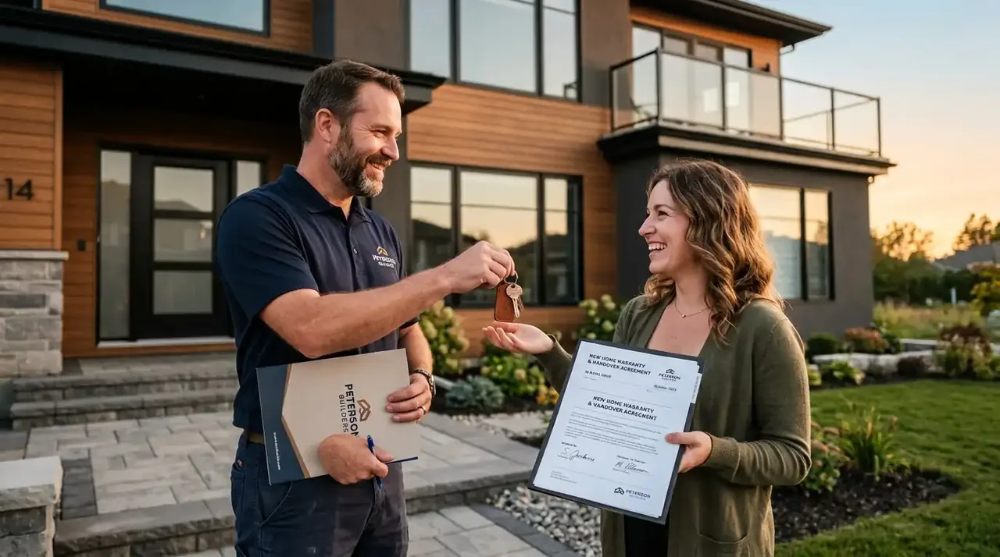

Apa yang Dimaksud Sistem Borongan Penuh dalam Pembangunan Rumah 2 Lantai?
Sistem borongan penuh adalah skema kontrak terpadu di mana kontraktor bertanggung jawab penuh menyediakan material SNI, tenaga kerja ahli, manajemen proyek, serta jaminan garansi fisik hingga serah terima kunci.
Bagi para pemilik bisnis, manajer pengadaan, dan profesional yang memiliki mobilitas tinggi, membangun rumah 2 lantai sering kali menjadi proses yang menguras waktu dan tenaga bila dikelola secara mandiri. Memilih sistem borongan penuh (*all-in/turnkey contract*) memberikan kepastian hasil akhir karena seluruh rantai eksekusi diserahkan kepada satu entitas penanggung jawab tunggal.
Cakupan lingkup kerja sistem borongan penuh berstandar profesional mencakup:
- Perencanaan Arsitektur & Gambar Kerja Lengkap: Desain tata ruang 2D denah, visualisasi rendering eksterior 3D fotorealistik, serta gambar *Detail Engineering Design* (DED) mekanikal, elektrikal, dan pemipaan (MEP).
- Pengadaan Material Konstruksi Ber-SNI: Pengadaan semen portland berkualitas, besi beton ulir ber-SNI 2052:2017, bata ringan presisi, dan lantai granit bebas cacad tanpa merepotkan pemilik rumah.
- Pelaksanaan Struktur & Pembesian Bertingkat: Pembuatan pondasi cakar ayam (*footplate*), sloof, kolom balok cor beton bertulang, hingga pelat lantai dak beton lantai dua dengan cetakan bekisting kokoh.
- Pekerjaan Finishing Elegan & Utilitas: Pemasangan kusen aluminium/UPVC, instalasi sanitari, pengecatan dinding interior dan eksterior tahan cuaca, serta uji fungsi jaringan listrik.
Komparasi: Sistem Borongan Penuh vs Borongan Upah Tenaga Saja
Sistem borongan penuh memberikan jaminan harga tetap dan efisiensi waktu total, sedangkan borongan upah membebankan risiko sisa material dan kenaikan harga belanja kepada pemilik rumah.
Keputusan memilih skema kerja sama sangat menentukan kelancaran arus kas proyek Anda. Berikut perbandingan komparatif terperinci:
| Indikator Parameter | Sistem Borongan Penuh (All-In Bergaransi) | Borongan Upah Kerja Tenaga Saja |
|---|---|---|
| Kepastian Anggaran Biaya | Pasti (*Fixed Price*) sesuai RAB yang disepakati di dalam SPK resmi. | Fluktuatif, rawan membengkak akibat lonjakan harga material di pasaran. |
| Beban Manajemen Waktu | Nol jam kerja pemilik; proyek diawasi penuh oleh Project Manager & Site Engineer. | Sangat menyita waktu pemilik untuk belanja dan mengontrol stok semen/besi. |
| Risiko Sisa & Kerusakan Material | Tanggung jawab penuh kontraktor pelaksana (risiko pemborosan ditanggung vendor). | Tanggung jawab pemilik rumah; sisa material terbuang menjadi kerugian pribadi. |
| Jaminan Mutu & Struktur Bertingkat | Diawasi uji slump beton cor dan perhitungan beban struktural insinyur sipil. | Mengandalkan kebiasaan tukang tanpa kalkulasi mekanika teknik beban gempa. |
| Garansi Retensi Pasca-Pengerjaan | Garansi pemeliharaan tertulis selama 3-6 bulan dan garansi struktur hingga 1 tahun. | Tidak ada garansi; jika ada keretakan atau kebocoran, tukang sulit dipanggil. |

Tahap pengecoran pelat lantai dak beton bertulang lantai dua yang diawasi ketat oleh pengawas konstruksi Kontraktor Bangunan untuk memastikan mutu kuat tekan beton.
Mengapa Struktur Rumah 2 Lantai Memerlukan Kontraktor Bersertifikasi?
Struktur rumah 2 lantai memerlukan kontraktor bersertifikasi guna memastikan ketahanan pelat lantai dak beton terhadap gaya gempa lateral dan mencegah lendutan balok yang berisiko runtuh.
Berbeda dengan bangunan satu lantai yang bertumpu pada beban gravitasi sederhana, rumah tinggal bertingkat dua memiliki kompleksitas mekanika teknik yang tinggi. Data industri konstruksi menegaskan pentingnya legalitas dan disiplin kerja sama profesional:
- Laporan Indeks Kemahalan Konstruksi BPS Periode 2025/2026: Membuktikan bahwa pembangunan rumah bertingkat dengan sistem borongan penuh 18,4% lebih hemat anggaran total dibandingkan belanja material mandiri karena kontraktor memiliki akses harga grosir distributor tingkat pertama.
- Publikasi Lembaga Pengembangan Jasa Konstruksi (LPJK) Periode 2024–2025: Mencatat bahwa sebanyak 58,7% proyek residensial bertingkat mangkrak disebabkan oleh sengketa pembengkakan biaya (*cost overrun*) dan ketidakmampuan tukang mengelola struktur tanpa SPK mengikat.
Risiko teknis utama yang berhasil dihindari bersama kontraktor berpengalaman:
- Kegagalan Pondasi Dangkal: Kondisi tanah keras di setiap lokasi berbeda. Kontraktor melakukan analisis sondir tanah sederhana untuk menentukan kedalaman pondasi cakar ayam (*strauss pile / footplate*) agar bangunan tidak mengalami penurunan sepihak (*differential settlement*).
- Lendutan Dak Beton Lantai Dua: Ketebalan pelat cor lantai minimal 12 cm dengan tulangan rangkap (*wiremesh* atau besi ulir) wajib dipasang menggunakan *concrete spacer* (beton tahu) agar selimut beton presisi dan tidak keropos.
- Kerapuhan Sambungan Kolom dan Balok (*Beam-Column Joint*): Pemasangan sengkang begel dengan kerapatan 5-10 cm di area pertemuan kolom-balok sangat vital sebagai peredam guncangan gempa bumi sesuai kaidah SNI 2847.
Apa Saja Keunggulan Kontraktor Bangunan untuk Proyek Rumah 2 Lantai?
Keunggulan Kontraktor Bangunan terletak pada transparansi RAB berbasis volume riil, jaminan material SNI resmi, ketaatan timeline pengerjaan, serta sertifikat garansi tertulis berbadan hukum.
Sebagai penyedia jasa konstruksi terpercaya, Kontraktor Bangunan berkomitmen menghadirkan pengalaman membangun hunian impian yang tenang (*peace of mind*) bagi Anda:
- Legalitas Kontrak Surat Perjanjian Kerja (SPK): Hak dan kewajiban kedua belah pihak diikat dalam kontrak hukum bermaterai lengkap dengan klausul sanksi keterlambatan (*denda penalti*) bila terjadi deviasi waktu tanpa force majeure.
- Laporan Mingguan Berbasis Foto & Kurva S: Pemilik proyek dapat memantau progres fisik dan keuangan proyek secara digital setiap minggu tanpa harus meninggalkan kesibukan kantor.
- Akses Material Harga Pabrikan: Kerja sama rantai pasok langsung dengan produsen semen, pabrik besi beton SNI, dan distributor granit memberikan Anda harga terjangkau dengan mutu terbaik.
- Pendampingan Perizinan PBG & SLF: Kami menyiapkan berkas teknis arsitektur dan struktur yang siap diajukan ke portal SIMBG Kementerian PUPR demi legalitas perizinan properti Anda.
Rencanakan Pembangunan Rumah 2 Lantai Anda Sekarang!
Dapatkan konsultasi arsitektur, estimasi anggaran RAB transparan, dan simulasi tahapan kerja langsung bersama tim ahli Kontraktor Bangunan.
Konsultasi Gratis via WA SekarangBagaimana Alur Kerja dan Skema Pembayaran Borongan Rumah 2 Lantai?
Alur kerja diawali dari survei lokasi, penyusunan desain arsitektur dan RAB, penandatanganan SPK, pengerjaan konstruksi sistem termin progres, hingga serah terima kunci bergaransi retensi.
Kami menerapkan sistem pembayaran bertahap (*termin based on progress*) yang transparan dan adil, menjauhkan Anda dari risiko kerugian finansial:
- Tahap 1: Konsultasi Awal & Pengukuran Lahan: Diskusi kebutuhan tata ruang, orientasi matahari, dan analisis batas kepemilikan tanah.
- Tahap 2: Desain Arsitektur 3D & Finalisasi RAB: Penyusunan gambar teknis terinci dan lembar anggaran biaya komprehensif tanpa biaya tersembunyi.
- Tahap 3: Penandatanganan SPK & Uang Muka (DP 20%): Mobilisasi material utama, pembersihan lahan, dan pemasangan pagar proyek.
- Tahap 4: Konstruksi Struktur Bertingkat (Termin Progres 30%): Pengecoran pondasi, sloof, tiang kolom, balok, dan pelat dak beton lantai dua.
- Tahap 5: Pasangan Dinding & Atap (Termin Progres 30%): Pasangan dinding bata ringan, plester aci, instalasi rangka baja atap dan penutup genteng.
- Tahap 6: Finishing & Serah Terima Kunci (Termin 15%): Pasangan granit, cat dinding, plafon gypsum, sanitari, dan pengujian utilitas listrik/air.
- Tahap 7: Garansi Retensi Pemeliharaan (Sisa 5%): Pembayaran termin terakhir setelah masa uji coba dan pemeliharaan rumah selesai tanpa keluhan.
FAQ seputar Kontraktor Rumah 2 Lantai Borongan
Kesimpulan Praktis
Membangun rumah 2 lantai dengan sistem borongan penuh bergaransi merupakan pilihan paling strategis untuk mengamankan anggaran, menjamin keselamatan struktur tahan gempa, dan menghemat waktu Anda yang berharga. Bersama tim profesional Kontraktor Bangunan, wujudkan hunian bertingkat yang kokoh, estetis, dan bernilai investasi tinggi tanpa rasa khawatir akan pembengkakan biaya.